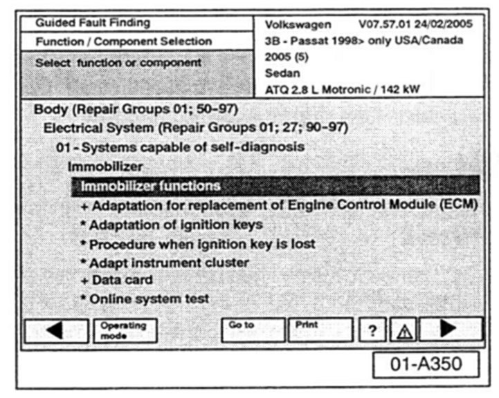
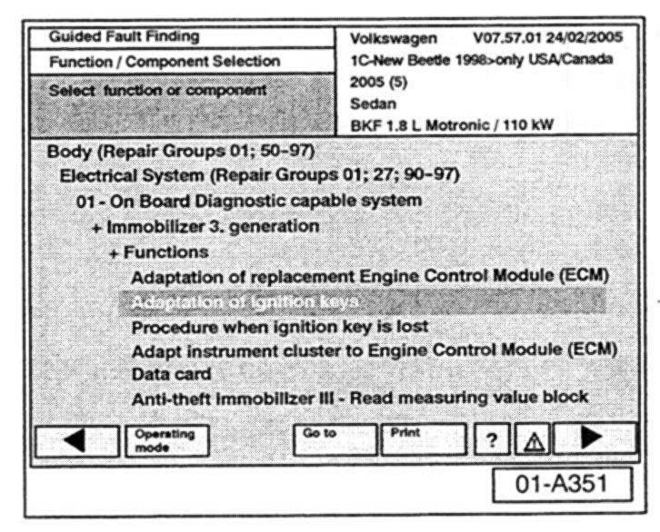
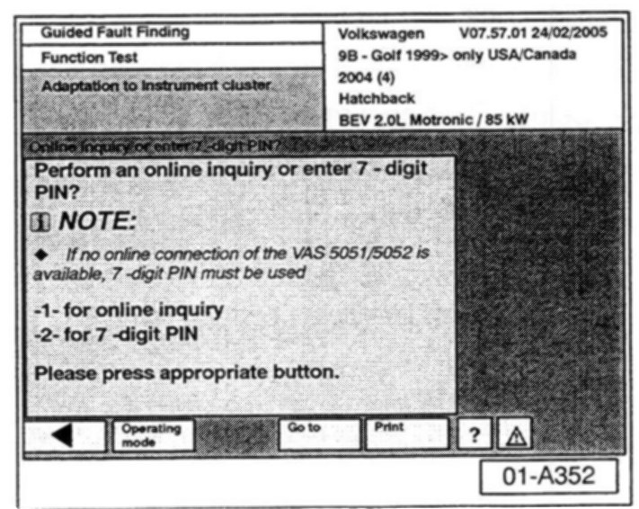
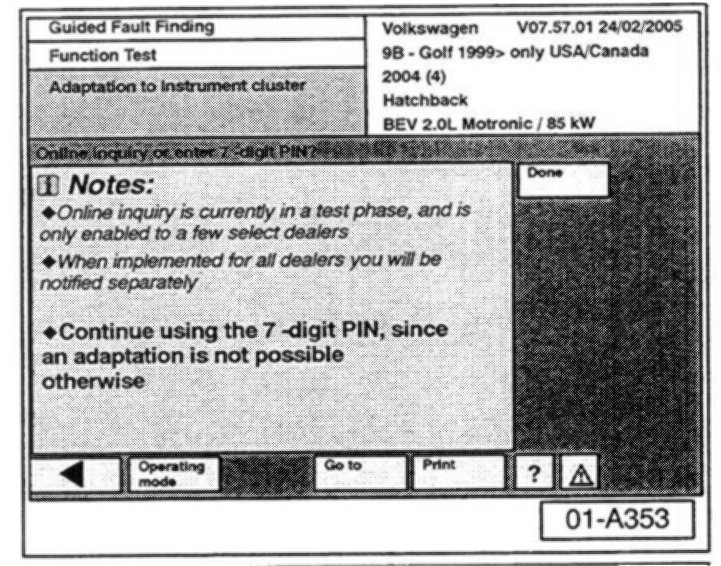
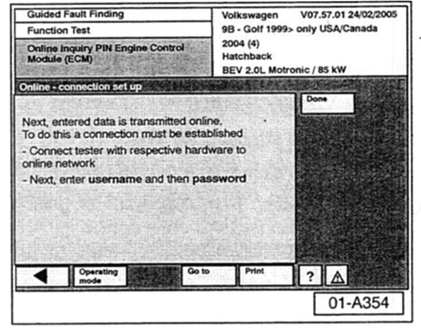
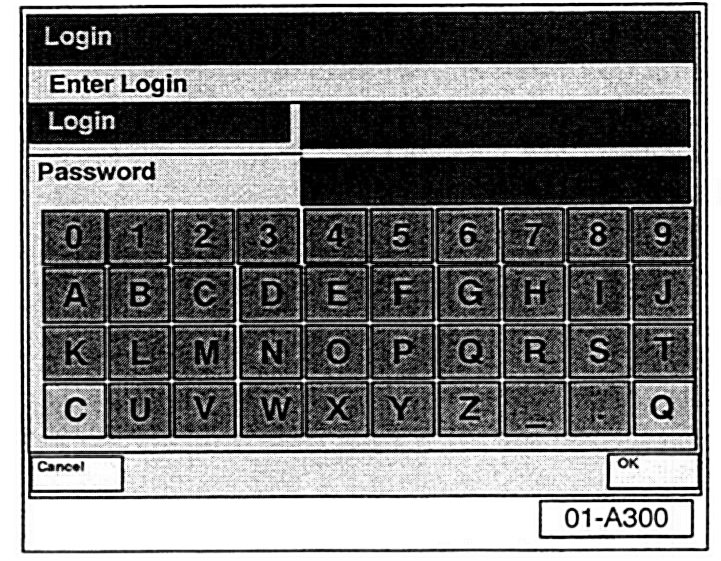
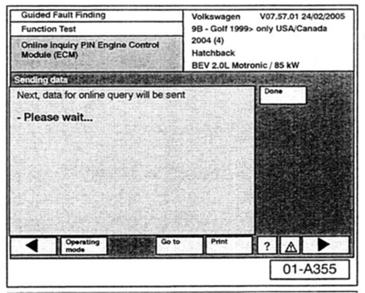
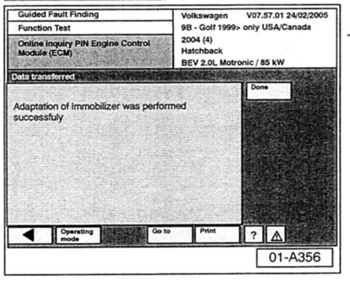

Immobilizer System - Code Retrieval
Group:01Number: 05-06
Date: Mar. 21, 2005
Subject:
Immobilizer Code, Retrieving Using a VAS 5051 or VAS 5052 and GeKo
Model(s):
All with Immobilizer 2000 --> 2005
Supersedes T.B. Group 01 number 05-05 dated Feb. 25, 2005 due to WIN DCS cut-off date March 31, 2005 and complete vehicle coverage.
Condition
All Immobilizer system components must be adapted using VAS 5051 or VAS 5052 online connection after March 31, 2005.
7-Digit PINs will no longer be available.
Service
Tip:
GeKo is a German acronym from the term Geheimnis und komponentenschutz. In English this means Security and Component Protection. GeKo is the name used for the Security and Component Protection process.
Retrieval of Immobilizer codes using GeKo is now available for use on all Volkswagen models equipped with Immobilizer.
Coverage:
After installing Volkswagen Brand CD V.07.57.01 (shipping to Dealers beginning Mar. 21, 2005):
^ Technicians can begin using GeKo for all vehicles.
General Information
^ The new GeKo process will not display the actual Immobilizer code to the user. The system will download the code directly into the various control modules.
^ The GeKo process is supported for all vehicle systems requiring 7-digit Immobilizer PIN (Immobilizer Generation II, III or IV).
^ The online GeKo process resolves the issue with 7-digit PIN codes beginning with "0" in Adaptation Channel 50 not being accepted by the Immobilizer when this code is entered into the Engine Control Module or Instrument Cluster (as described in VW Technical Bulletin Group 01 Number 04-21).
^ GeKo can only be accessed through either Guided Functions or Guided Fault Finding operating modes.
^ It is recommended to use the Guided Fault Finding operation mode for diagnosis, test plan, and adaptation before the Immobilizer instrument cluster and/or engine control units are replaced.
^ For vehicles where complete Guided Fault Finding is not available, select "Remaining passenger vehicles" from the vehicle selection menu to access the functionality.
Requirements
^ VAS 5051 or VAS 5052 (with Volkswagen Brand GDV.07.57.01 or later), equipped with Ethernet card and security certificate, connected to Dealer's Local Area Network (LAN) and high speed Internet access.
^ Operator must have a valid GeKo user ID and password. See MSSP Update "Introduction to New Immobilizer Procedure - GeKo", dated October 13, 2004, for instructions on how to obtain GeKo user ID and password.
^ All vehicle keys are required when adapting the instrument cluster or vehicle keys.
^ 17-character Vehicle Identification Number (VIN) may be required for vehicles where it cannot be read directly from a vehicle control module.
^ All system DTC memories checked and erased.
^ Vehicle Battery MUST be fully charged and maintained during this procedure.
Service
Tip:
^ For best results, connect the VAS 5051/5052 to the online connection before turning on (booting) the tool.
^ Some VAS 5051/5052 display screens take time to process. Pressing buttons too quickly can disrupt the processing that is taking place and may cause partial loss of touch screen function. To restore touch screen function, VAS 5051/5052 must be rebooted.
^ Only key VAS 5051/5052 display screens needed in the following procedure are illustrated here. Follow all text prompts as indicated on each VAS 5051/5052 screen.
Tip:
The following procedure is for navigation to Immobilizer functions using Guided Fault Finding. The same features are also available using Guided Functions.
With the VAS 5051/5052 connected to the vehicle:
- Switch ignition ON.
- From Start-up screen, select "Guided Fault Finding".
- Select brand "Volkswagen".
- Select appropriate vehicle.
- From Confirm Vehicle Selection screen select the forward arrow --> on navigation bar.
- Perform Vehicle System lest as directed.
Tip:
For vehicles where complete Guided Fault Finding is not available (Cabrio and Euro Van), select []Remaining passenger vehicles[] and navigate to Immobilizer functions using Guided Fault Finding or Guided Functions.
^ If any faults are present, they should be diagnosed and repaired following standard Guided Fault Finding and Repair Manual procedures.
Once repairs are made:
- Erase stored DTCs and run Vehicle System Test again.
After performing the Vehicle System Test:
- Select the forward arrow --> on navigation bar.
- Select "Go to" on the navigation bar.
- Select "Function / Component Selection".
- Select "Body".
- Select "Electrical".
- Select "01 - Systems Capable of Self Diagnosis".
- Select "Immobilizer".

- Select Immobilizer function you wish to perform on the vehicle.
Tip:
^ Jetta (Model Code 9M)
^ New Beetle (Model Code 1C)
^ New Beetle Convertible (Model Code 1Y)

Include a Function Test "Adaptation of ignition keys that includes GeKo code access for ALL Immobilizer components.
Tip:
Immobilizer functionality differs from vehicle to vehicle. The available function selections may change depending on the vehicle selected.
- Follow on-screen instructions.

When similar screen appears, select "-1-" to start the online inquiry process (for item -2-, see tip below).
Tip
After March 31, 2005 the option to receive a 7-digit PIN will not be available (the process will only be available using the online connection).
Item -2- no longer functions and will be removed in future software releases.

If this screen appears during the adaptation process:
- Select "Done" (process will continue).
Tip:
This screen will be removed in future software releases.
- Continue to follow instructions as directed by the tester.

When similar screen appears, a GeKo username and password must be entered.
- Select "Done" to continue.

Similar Login screen appears.
- Enter GeKo username and Password.
- Select "Q" to confirm input.
Continue to follow instructions as directed by the tester.

Similar screen appears once a successful online connection has been established and data is being passed between the tester and the GeKo online database.
- Continue to follow instructions as directed by the tester.

Similar screen appears once a successful function has been completed.
- Select "Done".
Technical Support
Tip:
The following technical support contacts are for VW dealership personnel only.
For GeKo connectivity, contact the Volkswagen support.